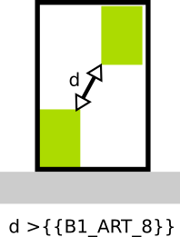

IAUIDF-005 - Distance minimale entre bâtiments
Modèle de phrase
La distance entre les bâtiments au sein de la parcelle doit être supérieure à m.
Paramètres
B1_ART_8
Distance minimale des constructions les unes par rapport aux autres sur une même parcelle.
Explications
indique la distance minimale qui doit être respectée entre deux bâtiments.

Implémentation
La vérification de la distance s'effectue dans la classe PredicateIAUIDF et les distances sont mesurées entre les deux bandes de constructibilité.